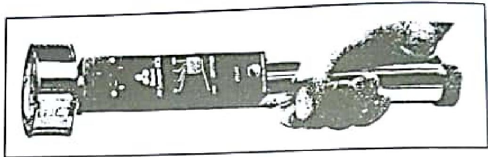

Bacteriological Examination of Water, Milk, Food and Air
Bacteriological Examination of Water
Drinking water must be free from harmful microorganisms. Contamination with sewage or faecal matter can cause diseases like typhoid, cholera, and dysentery. The aim is to detect indicator bacteria (common intestinal commensals) rather than specific pathogens, which may be sparse or intermittent.
Indicator Organisms
- Coliforms (particularly Escherichia coli): Primary indicator of faecal pollution.
- Streptococcus faecalis (Enterococci): Confirms faecal origin.
- Clostridium perfringens: Spores survive longer; indicates remote or intermittent pollution.
Methods
1. Presumptive Coliform Count (Multiple Tube Method)
Based on estimating the Most Probable Number (MPN) of coliforms. Measured volumes of water are added to MacConkey broth (with Bromocresol purple) and incubated at 37°C. Acid (yellow) and Gas (bubble) indicate presumptive positive.
2. Confirmed E. coli Count (Eijkman Test)
Positive tubes are subcultured into fresh lactose bile salt medium and tryptone water, incubated at 44°C. Gas production and Indole positivity at 44°C confirms E. coli.
3. Membrane Filtration Method
Water is filtered through a membrane (0.45µm pore). The membrane is placed on a nutrient pad (e.g., MacConkey membrane broth) and incubated. Colonies are counted directly.
Advantages: Faster, more accurate, handles large volumes.
| Quality | Coliforms / 100ml | E. coli / 100ml |
|---|---|---|
| 1. Excellent | 0 | 0 |
| 2. Satisfactory | 1–3 | 0 |
| 3. Intermediate | 4–9 | 0 |
| 4. Unsatisfactory | $\ge$ 10 | $\ge$ 1 |
Bacteriological Examination of Milk
Grades of Milk
- Pasteurised: Heated to 63-66°C for 30 mins or 72°C for 15 secs.
- Sterilised: Heated at 100°C.
- UHT (Ultra Heat Treated): Heated at 135°C for 1 sec.
Statutory Tests
1. Methylene Blue Reduction Test
Tests for bacterial contamination. Bacteria reduce the blue dye to colourless.
Method: Add 1 ml methylene blue to 10 ml milk. Incubate at 37°C.
Result: If decolourised within 30 minutes, the milk fails the test (Heavy contamination).
2. Phosphatase Test
Tests for effective pasteurisation. Phosphatase enzyme (present in raw milk) is destroyed by pasteurisation.
Principle: Phosphatase liberates p-nitrophenol (yellow) from substrate.
Result: Yellow colour = Failed (Under-pasteurised). No colour = Passed (Properly pasteurised).
3. Turbidity Test
Tests for sterilised milk. Heating at 100°C denatures proteins. If ammonium sulphate is added to properly sterilised milk, filtrate boiled should show NO turbidity.
Bacteriological Examination of Food
Performed to establish hygiene standards, shelf-life, and detect pathogens in outbreaks.
Food Poisoning
Classified into Infection (bacteria multiply in body) and Intoxication (ingestion of pre-formed toxin).
| Feature | Salmonella | Staph. aureus | Cl. perfringens | Cl. botulinum | Bacillus cereus |
|---|---|---|---|---|---|
| Type | Infection | Intoxication | Infection/Toxin | Intoxication | Intoxication |
| Incubation | 12-24 hours | 2-6 hours | 8-22 hours | 12-72 hours | 0.5-6 hours |
| Symptoms | Diarrhoea, Fever | Vomiting | Diarrhoea, Pain | Neuroparalysis | Vomiting |
| Source | Meat, Eggs, Poultry | Cream, Meat, Handlers | Reheated Meat | Canned Food | Fried Rice |
Bacteriological Examination of Air
Monitoring air quality in operating theatres, ICUs, and burn units.
Methods
- Settle Plates: Agar plates left open for a set time. Bacteria settle by gravity. Simple but only detects heavy particles.
-
Slit Air Sampler (Casella): Draws known volume of air through a slit onto a rotating agar plate. Quantifiable ($CFU/m^3$).

-
Centrifugal Air Sampler (Biotest): Portable. Air impacts onto an agar strip inside a drum.

Air Quality Standards (Biotest)
- Transplantation areas: $\le 10 \text{ CFU}/m^3$
- Operating theatres: $\le 70 \text{ CFU}/m^3$
- General wards: $\le 800 \text{ CFU}/m^3$